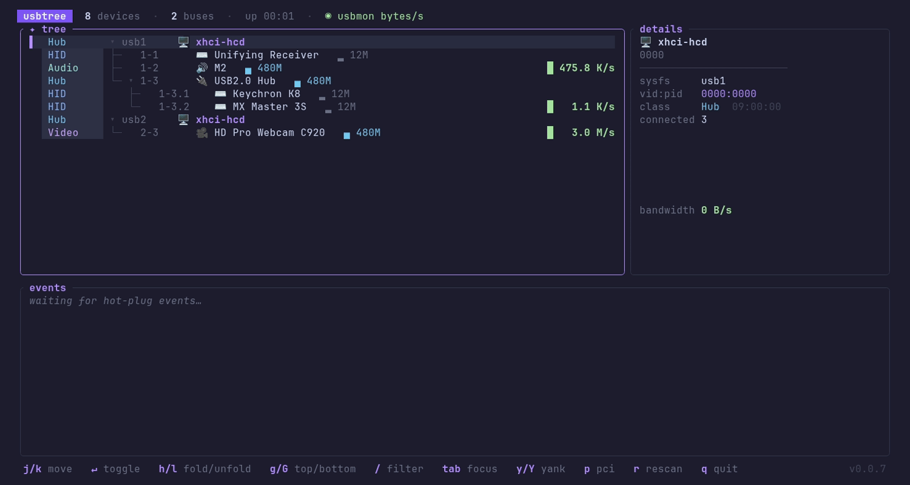

A cross-platform TUI for inspecting USB devices — hubs, classes, speeds, hot-plug events and live bandwidth. Pure Rust via nusb: no root, no libusb. One static binary, ~1.5 MB download (~5–7 MB on disk). Linux · macOS · Windows.
$ curl -fsSL
https://raw.githubusercontent.com/gnomeria/usbtree/main/scripts/install.sh
| sh

Everything lsusb -t shows
— plus names that make sense, hot-plug awareness, and live traffic.
Color-coded class gutter, per-class icons, tree rails, and speed
badges (▂ 12M → █ 10G). Rescans every
second; collapse hubs to a +N badge.
Resolution chain: your overrides.ids → descriptor
strings → a downloadable usb.ids (--updatelist) → the
embedded snapshot → vendor + class heuristics.
Plugged devices flash green, unplugged ones linger as red crossed-out ghosts for 30 s, and every event lands in a timestamped log panel.
Per-device sparklines in the tree and a bandwidth graph in the detail panel. Unprivileged URBs/s; real bytes/s with root + the usbmon module. Linux only — macOS/Windows expose no unprivileged per-device counter (sudo won't help).
Misc/IAD (0xef) devices are classified by their interface classes —
a MOTU M2 shows as Audio, not Misc.
Hit e on a USB drive to unmount it and cut port power
through udisks2 — a confirmation dialog, then a clean pull. No root,
no sudo. Linux only for now.
Press p to flip to a flat PCI device list with a detail
pane — prog-if, subsystem, link speed/width, NUMA node, IOMMU group,
and power state.
Built on nusb and ratatui: no root, no libusb, no drivers. One
static binary per OS — a ~1.5 MB download (~5–7 MB on disk),
no runtime deps.
--dump for scripts, --demo to try it
without hardware.
The tree, names, hot-plug log and detail panel work everywhere. Live per-device traffic is Linux-only — macOS and Windows expose no unprivileged per-device counter.
| Feature | Linux | macOS | Windows |
|---|---|---|---|
| Device tree — hubs, classes, speeds | ✓ | ✓ | ✓ |
| Friendly names — overrides + usb.ids | ✓ | ✓ | ✓ |
| Hot-plug watch + event log | ✓ | ✓ | ✓ |
| Detail panel — path, vid:pid, serial | ✓ | ✓ | ✓ |
| Device power bMaxPower, advertised | ✓ | ✓ | — |
| Live sparklines URBs/s | ✓ | — | — |
| Real bandwidth usbmon bytes/s, root | ✓ | — | — |
| Safe eject unmount + power-off, no root | ✓ | — | — |
| Prebuilt binaries | amd64 · arm64 | arm64 | amd64 |
Release archives ship for linux-amd64, linux-arm64, darwin-arm64, and
windows-amd64, each sha256-listed in
checksums.txt.
The shell installer and prebuilt binary links require a published GitHub release. If no release is available yet, install from source.
brew install gnomeria/tap/usbtree
Prebuilt binary from gnomeria/homebrew-tap. Apple Silicon and Linux only (no Intel Mac prebuild).
curl -fsSL https://raw.githubusercontent.com/gnomeria/usbtree/main/scripts/install.sh | sh
Installs to
/usr/local/bin or
~/.local/bin. Pin with
USBTREE_VERSION,
override dir with
USBTREE_INSTALL_DIR.
Checksums verified automatically.
irm https://raw.githubusercontent.com/gnomeria/usbtree/main/scripts/install.ps1 | iex
Installs to
%LOCALAPPDATA%\usbtree\bin
and adds it to PATH. Pin with
$env:USBTREE_VERSION.
Binaries are unsigned — SmartScreen may warn on first run.
tar -xzf usbtree_*_linux-amd64.tar.gz && ./usbtree
Grab the archive from the
latest release. Windows: unzip
usbtree_*_windows-amd64.zip
and run
usbtree.exe.
Binaries are not code-signed/notarized. macOS:
xattr -d com.apple.quarantine ./usbtree
(shell installer and Homebrew formula clear quarantine). Windows:
SmartScreen → More info → Run anyway.
cargo install --git https://github.com/gnomeria/usbtree
Or clone and
cargo build --release.
Stable toolchain, edition 2024.